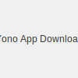

With the popularity of Yono Games, it's important to know how to download the apps safely. There are many fake and malicious apps out there, so it's crucial to only download from trusted sources. This guide will walk you through the process of safely downloading Yono Games apps.
Downloading apps from unofficial sources can put your device and personal information at risk. These fake apps may contain malware, viruses, or spyware that can steal your data or damage your device. Always make sure you are downloading the official Yono Games apps.
The developers of Yono Games are committed to providing a safe and secure gaming environment. They regularly update their apps to patch security vulnerabilities and improve performance. By downloading from the official source, you can be confident that you are getting a safe and high-quality app.
Enjoying your favorite Yono Games should never come at the cost of your security. By following these simple steps, you can ensure that you are downloading the official and safe versions of the Yono Games apps. Stay safe, and happy gaming!